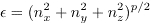

Ideal quantum gases
The program implements a Monte Carlo simulation of the ideal gas in 1, 2, or 3 dimensions in equilibrium with a heat bath at temperature T. We assume that the single particle energies have the form ε = kp where k is the wavevector. The user can choose Fermi-Dirac (FD), Bose-Einstein (BE), or Maxwell-Boltzmann (MB) statistics. The output includes plots of the following quantities:
- The density of states (the number of states per energy level).
- The particle distribution function n(ε), the mean number of particles in a particular microstate with energy ε.
- The energy occupancy diagram which shows the energy of a state versus particle label.
- A k-space plot that shows which sites in phase space are occupied.
An an example of the relation ε = kp with p = 2, we know that the energy of a non-relativistic particle of mass m in three dimensions is given by

where
kx = 2πnx/L
and nx = 0, ±1, ±2, …. We have adopted periodic boundary conditions so that the quantum numbers are the positive and negative integers. In the following we will choose units such that we can express the energy as

For simplicity, we will take the ground state to be (0,0,0) in order that there be only one ground state. Note that the ground state has zero energy. The six first excited states are (1,0,0), (-1,0,0), (0,1,0), (0,-1,0),(0,0,1), and (0,0,-1).
According to quantum mechanics, particles of the same type are indistinguishable, and thus swapping two particles does not change the state of the system. To enforce this requirement the particles are labeled and the states are ordered according to their energy. Trial moves are made such that the order of the particles on this list cannot change. For example, particle number 3 is always in an energy state that is the same (possible for BE) or lower in the list than particle number 4. The Pauli exclusion principle for FD statistics is enforced by allowing only one particle per state (spin is ignored). The only MC moves are for a particle to move up or down one state in the list of states. The algorithm is given by the
following steps:
- Set up a discrete number-space in 1, 2, or 3 dimensions with maximum quantum number nmax. Order each state in this space by its energy.
- Initially place the N particles in the lowest energy configuration.
- Choose a particle at random and randomly move it up or down in the list. If the move is allowable, that is, if the state is unoccupied for FD statistics and if the order of the particles is unchanged, then compute the trial change in the energy ΔE that would occur if the particle were moved.
- Use the Metropolis algorithm to accept or reject a move. If ΔE < 0, accept the move. If not, then if exp(-ΔE/T) > r, where r is an uniform random number between 0 and 1, accept the trial
move; otherwise the move is rejected.
- Repeat steps 3 and 4 for N attempted moves, which we define as one Monte Carlo step per particle (mcs).
- Accumulate data for the mean number of particles in each state, the total energy, and the square of the total energy (the latter two quantities will be used to compute the specific heat).
- Initialize the program using the default parameters. First focus on the density of states window. If
nmax is large, we expect the density of states g(ε) to be proportional to ε(d/p - 1). Try various values of the spatial dimension d and exponent p, and determine whether your results are consistent with this relation. If your results are not smooth, you can change the energy interval Δε and choose a larger value of nmax if your computer is sufficiently fast. Also you can change the steps per display to 100 or 1000 to speed up the simulation.
- Does g(ε) depend on the statistics? Does it depend on the temperature? Does g(ε) change with the number of Monte Carlo steps per particle? Explain your answers.
- Now focus on the energy occupancy diagram. Note that the width of each horizontal line gives the number of particles with a particular energy. Use the default values of the parameters and run the simulation for FD, BE, and MB statistics. How does the energy occupancy diagram change with the number of Monte Carlo steps per particle? Explain the differences for the three cases. Why is it possible for more than one particle to have the same energy? As discussed, there is only one ground state and 6 first excited states with the same energy in three dimensions. How many states are there in the next energy level (ε = 2)? Repeat for p = 1 which is relevant for photons or highly relativistic particles. Do your conclusions change?
- The program outputs the phase space diagram whenever the user presses the Stop button. The diagram is not continuously updated during the simulation. What is the shape of the region in phase space that is occupied for FD statistics in 1, 2, and 3 dimensions? What happens as the temperature is increased? How does the occupied region vary between the three statistics at low temperatures and at high temperatures?
- Now consider the distribution function plot of n(ε). Note that n(ε) gives the mean number of particles in a particular microstate with energy ε. It is not the probability that a particle has energy ε. In principle, each data point corresponding to a different single particle microstate with the same energy should be on top of each other, but because the simulation only visits each state a finite number of times, there are sampling errors. (How is the error in each data point related to the number of times that a particular state has been visited?) Also, shown is the average energy per particle E/N and specific heat c. Use the default parameters and FD, but start with temperature T = 1. Describe the distribution function n(ε) and explain why it has the form it does. Run for thousands of mcs (displayed on the phase space diagram), and reset the data after a few thousand mcs to equilibrate the system. What happens if the temperature is increased? Now take more accurate data for the energy and specific heat at T = 0.5 and T = 1.0. Note the width of n(ε). Is it roughly proportional to T for low temperatures? If so, the specific heat should be proportional to T because this width is a measure of the change in the energy of particle during a trial move. The program estimates the specific heat from the fluctuations in the energy. Are these estimates proportional to temperature at low temperatures?
- Now consider BE statistics. Start at T = 1. What do you notice? At very low temperatures the ground state contains most of the particles. At what temperature does the ground state cease to be a significant fraction of the particles (say less than 10%)? In the limit of an infinite system this temperature would correspond to a phase transition. Plot the specific heat as a function of temperature at low temperatures. The peak in the specific heat occurs at the phase transition in the thermodynamic limit.
- Consider BE statistics with p = 1. This value of p is equivalent to a gas of photons. In such a system the number of photons is not fixed as it is in our simulation. However, we can consider photons that reach the ground state as being lost to the system. The energy distribution function is what would be the blackbody spectrum. In the thermodynamic limit the location of the peak in this spectrum is proportional to the temperature. How well does the simulation produce this result for a finite system?
- The energy distribution function is the number of particles with energy ε between ε and ε + Δε. Note this function is not the same as n(ε). Explain why this function is proportional to the density of states g(ε) times the distribution function n(ε). This function is not plotted. (What is plotted is εg(ε)n(ε).) Is there any difference in the energy distribution function between the different statistics at low temperatures or at high temperatures?
- The chemical potential μ can be extracted from the (equilibrium) particle distribution function n(ε). For FD statistics μ is the energy where the distribution function n(ε) equals 1/2. At T = 0 this energy is called the Fermi energy εF, and is where the step function drops from unity to zero. For low temperatures T << TF, μ - εF is proportional to T2. Collect data for μ between T = 0 and 4, and determine how your results compare.
- For BE statistics the chemical potential μ can be found from the value of the ground state occupancy n(ε = 0), and is given by μ/T = -ln[1 + 1/n(0)] for temperatures above the Bose-Einstein condensation temperatures Tc. Note that μ is negative. How does μ behave near and above Tc? Would it be negative for FD or MB statistics? Does the chemical potential depend on the nature of the statistics at high temperatures (where quantum effects are negligible) and at low temperatures?
- Harvey Gould, Lynna Spornick, and Jan Tobochnik, Thermal and Statistical Physics Simulations, John Wiley & Sons (1995), Chapter 5.
Updated 13 May 2008.